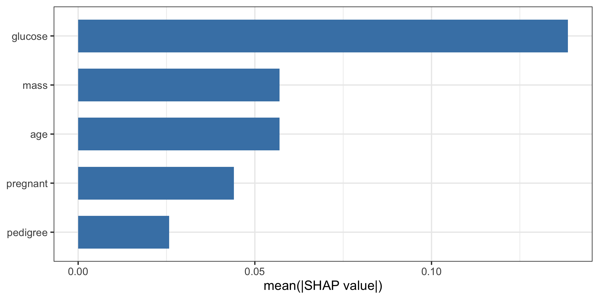
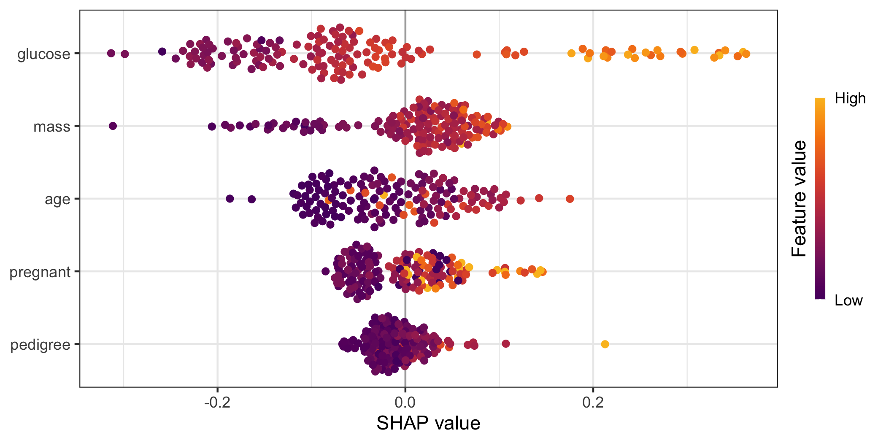
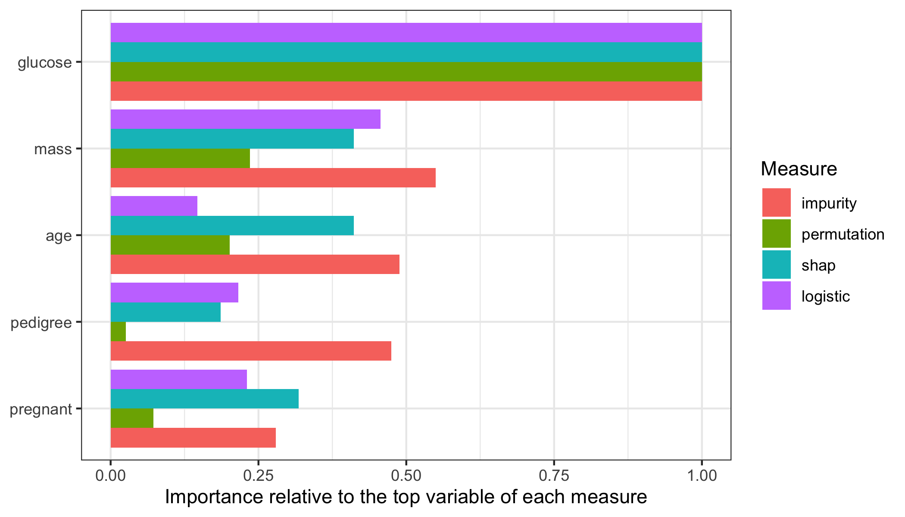
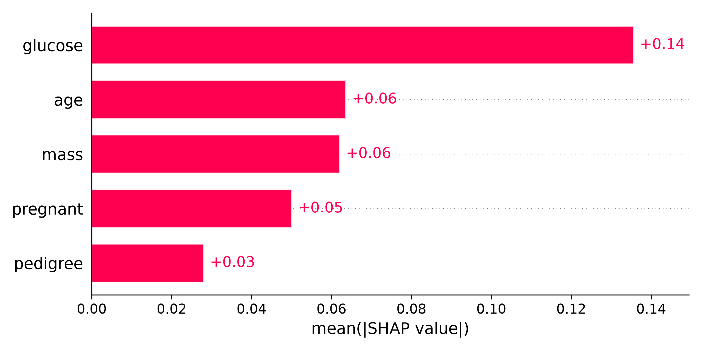
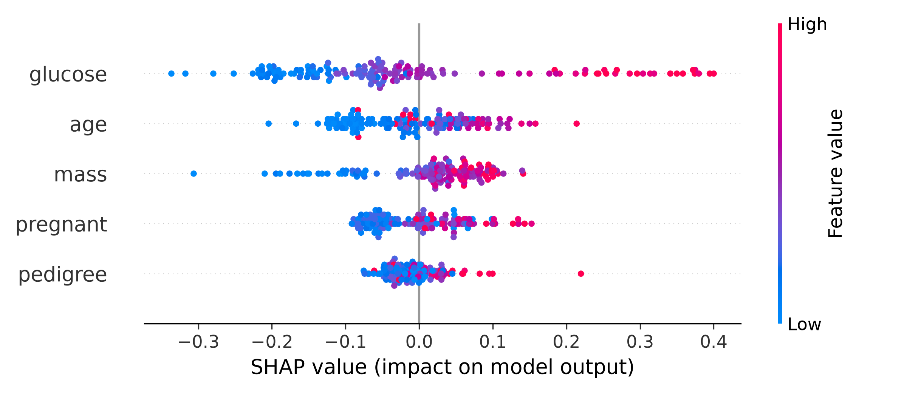
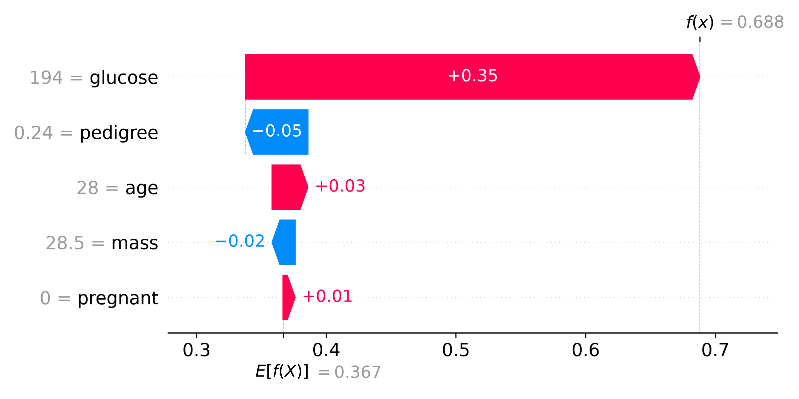
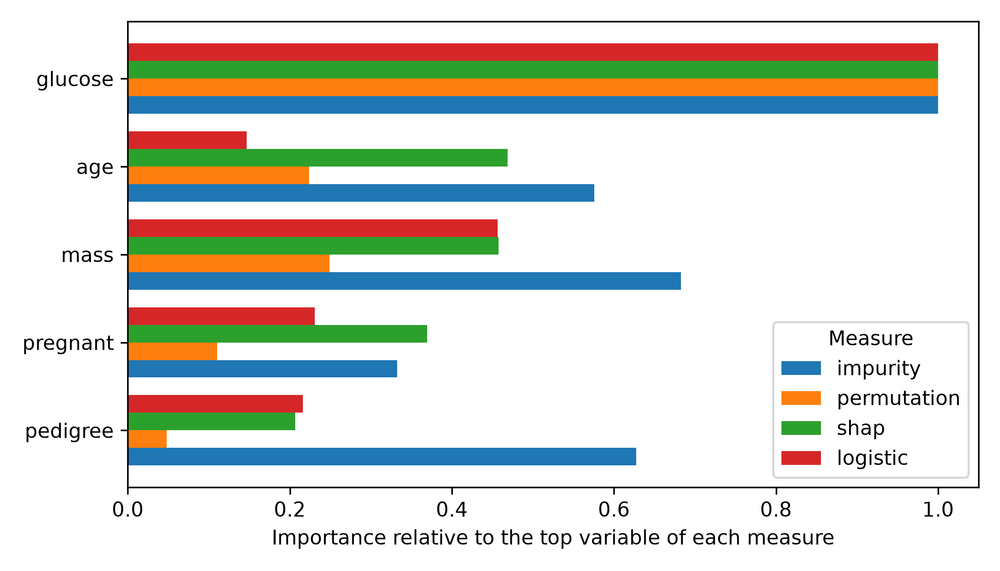

library(tidyverse)
library(tidymodels)
library(vip) # impurity importance, as in Exercise 9.1
library(kernelshap) # computes SHAP values for any model
library(shapviz) # plots SHAP values
theme_set(theme_bw()) # white background for every plot
options(pillar.sigfig = 3) # show three significant figures in tablesExercise 9.2 — SHAP values: global and local explanations
Exercise 9.1 ranked the variables for the forest as a whole. It said nothing about direction (does a high BMI push the risk up or down?) and nothing about any one patient. SHAP values give both. For every patient and every variable they say how much that variable moved this patient’s predicted probability away from the average, and they add up exactly to the prediction. Averaged over patients, they also give a ranking of their own, which we finish by comparing with every other measure, and with the coefficients of a logistic regression.
Theory: Shapley values from cooperative game theory; the baseline (expected value); additivity; global summaries (mean absolute SHAP, beeswarm); local explanations (waterfall plot); coefficients of a logistic regression on a common scale.
NoteThe plots are for looking at
The code for every plot is folded away just above it, in case you are curious, and all of it is in the code file linked at the top of each tab. You are not expected to write it yourself.
Download the R code from this chapter — every cell below, in page order, including the code for every plot, with the blanks left for you to fill in. Open it in Positron beside the page and run it a chunk at a time.
Packages and data
The same data (data/diabetes.csv), split, predictors and random forest as Exercise 9.1.
diabetes <- read_csv("data/diabetes.csv") |>
select(pregnant, glucose, mass, pedigree, age, diabetes) |>
filter(glucose > 0, mass > 0) |> # remove the impossible zeros
mutate(diabetes = factor(diabetes, levels = c("neg", "pos")))
test_rows <- seq(1, nrow(diabetes), by = 5) # every fifth person is held back
train <- diabetes[-test_rows, ]
test <- diabetes[test_rows, ]
set.seed(1)
rf_fit <- rand_forest(trees = 500) |>
set_engine("ranger", importance = "impurity") |>
set_mode("classification") |>
fit(diabetes ~ ., data = train)
test_preds <- predict(rf_fit, new_data = test, type = "prob") |>
bind_cols(test)Part 1 — SHAP values for the test patients
SHAP (SHapley Additive exPlanations) borrows an idea from game theory. Think of the five predictors as players who together produce a payout: this patient’s predicted probability, minus the average prediction (the baseline). The Shapley value of a player is its contribution averaged over every order in which the players could have joined the team. For a variable, that means: how much does the prediction change when we learn this patient’s value of the variable, averaged over all the combinations of the other variables we might already know?
Shapley values have properties that make them easy to read:
- Additivity (efficiency): baseline + the SHAP values of all variables = the prediction for that patient, exactly.
- Symmetry: two variables that contribute the same get the same value.
- Dummy: a variable that never changes the prediction gets zero.
A positive SHAP value pushes this patient’s risk up; a negative one pushes it down.
In R, kernelshap computes SHAP values for any model that can predict. To stand for “a variable we do not know yet” it fills the variable in from a background sample of patients; 100 training rows are plenty. With five predictors it can try every combination, so the values are exact for that background. We explain the 150 test patients. Asking predict() for type = "prob" gives SHAP values for both columns, .pred_neg and .pred_pos; shapviz stores them, and we keep the ones for .pred_pos. This takes about 15 seconds.
set.seed(1)
background <- train |>
slice_sample(n = 100) |>
select(-diabetes)
shap_rf <- kernelshap(rf_fit, X = test |> select(-diabetes), bg_X = background,
type = "prob", verbose = FALSE)
sv_pos <- shapviz(shap_rf)$.pred_pos # SHAP values for the probability of pos
dim(get_shap_values(sv_pos)) # one row per patient, one column per predictor#> [1] 150 5get_baseline(sv_pos) # the average prediction#> [1] 0.4002135The baseline is 0.400: the mean predicted probability over the background patients. (Python’s TreeExplainer averages over all the training rows and gets 0.367; the forests differ too, so the two languages’ SHAP values differ a little.)
Check additivity for the first test patient: the baseline plus the five SHAP values should give that patient’s predicted probability.
# Replace every ______ below, then run this cell.
patient_shap <- get_shap_values(sv_pos)[1, ]
patient_shap
get_baseline(sv_pos) + ______(patient_shap)
test_preds$.pred_pos[1]
ImportantLearning points
- A SHAP value is one variable’s contribution to one patient’s prediction, measured from the baseline (the average prediction).
- Baseline + the SHAP values of all variables = the prediction, exactly.
- Positive values push the predicted risk up, negative values push it down.
Part 2 — Global summaries: bar plot and beeswarm
We now have 150 × 5 SHAP values. Two summaries turn them into a picture of the whole model. The first is the mean absolute SHAP value of each variable: how far, on average, the variable moves a patient’s prediction, in either direction. It is a variable importance, in units of probability.
shap_importance <- get_shap_values(sv_pos) |>
abs() |>
colMeans()
sort(shap_importance, decreasing = TRUE)#> glucose mass age pregnant pedigree
#> 0.13861888 0.05699040 0.05698846 0.04405057 0.02577296Code for this plot (optional)
sv_importance(sv_pos, fill = "steelblue")
On average glucose moves a patient’s predicted probability by 0.139; the other four variables by between 0.026 and 0.057. The ranking is close to the permutation importance of Exercise 9.1.
The second summary, the beeswarm, shows every patient. Each dot is one patient’s SHAP value for one variable; the colour is the patient’s value of that variable (from low to high).
Code for this plot (optional)
sv_importance(sv_pos, kind = "beeswarm")
Question! Read the glucose row of the beeswarm. Where are the patients with high glucose, and where are those with low glucose? Is the same true of age?
High glucose sits on the right (pushes the risk up) and low glucose on the left. Glucose can move a prediction a long way in either direction: from about −0.3 to about +0.36 in R, and to +0.40 in Python. Age points the same way, older patients mostly on the right, but more weakly (about ±0.2). Nothing told the forest that either relation should go one way; it found the direction in the data, and SHAP makes it visible. This is what a bar of importances cannot show.
ImportantLearning points
- The mean absolute SHAP value of a variable is a global importance, measured in units of the prediction.
- The beeswarm shows, for every patient, how large the contribution is and in which direction, coloured by the variable’s value.
- Unlike impurity or permutation importance, SHAP shows the direction of an effect.
Part 3 — One patient: the waterfall plot
A local explanation answers: why did the model give this patient this risk? Take the first test patient:
test_preds |>
slice(1) |>
select(pregnant, glucose, mass, pedigree, age, diabetes, .pred_pos)#> # A tibble: 1 × 7
#> pregnant glucose mass pedigree age diabetes .pred_pos
#> <dbl> <dbl> <dbl> <dbl> <dbl> <fct> <dbl>
#> 1 0 194 28.5 0.24 28 neg 0.690A 28-year-old with no pregnancies, a BMI of 28.5 and a glucose of 194 mg/dL, who does not have diabetes. The model gives her a probability of 0.69 (0.690 in R, 0.688 in Python). The waterfall plot starts at the baseline at the bottom and adds one SHAP value at a time, up to her prediction at the top:
Code for this plot (optional)
sv_waterfall(sv_pos, row_id = 1)
Her very high glucose adds about 0.31 (R) or 0.35 (Python) to the baseline; her other values change little. At a threshold of 0.5 she is a false positive, and the explanation says why: the model has learned that a glucose of 194 usually means diabetes. Nothing in the explanation says the model is right; it says what the model did.
The same information can be drawn as a force plot (R: sv_force(); Python: shap.plots.force()): one horizontal bar with the pushes up and down facing each other.
Your turn. Draw the waterfall for the test patient the model thinks is at highest risk.
# Replace every ______ below, then run this cell.
highest <- which.max(test_preds$______) # the row number of the highest probability
test_preds |> slice(highest)
sv_waterfall(sv_pos, row_id = ______)
TipStuck?
which.max() returns the position of the largest value in a vector; the vector you want is the predicted probability of pos. Then pass that position as row_id.
ImportantLearning points
- A local explanation breaks one patient’s prediction into contributions that add up from the baseline to the prediction.
- It explains what the model did for this patient, not whether the model was right.
- Different patients can be at high risk for different reasons, which a global ranking cannot show.
Part 4 — Logistic regression, and all the measures side by side
A logistic regression on the same five predictors is a model we can read directly (Day 4): each coefficient is the change in the log-odds of diabetes for one unit more of that predictor, the others held fixed.
log_fit <- logistic_reg() |>
set_engine("glm") |>
fit(diabetes ~ ., data = train)
tidy(log_fit)#> # A tibble: 6 × 5
#> term estimate std.error statistic p.value
#> <chr> <dbl> <dbl> <dbl> <dbl>
#> 1 (Intercept) -7.89 0.745 -10.6 3.59e-26
#> 2 pregnant 0.0604 0.0374 1.62 1.06e- 1
#> 3 glucose 0.0320 0.00343 9.34 9.23e-21
#> 4 mass 0.0659 0.0150 4.41 1.05e- 5
#> 5 pedigree 0.590 0.263 2.24 2.51e- 2
#> 6 age 0.0126 0.0120 1.05 2.94e- 1predict(log_fit, new_data = test, type = "prob") |>
bind_cols(test) |>
roc_auc(truth = diabetes, .pred_pos, event_level = "second")#> # A tibble: 1 × 3
#> .metric .estimator .estimate
#> <chr> <chr> <dbl>
#> 1 roc_auc binary 0.830The logistic regression reaches a test AUC of 0.830, against 0.826 (R) and 0.824 (Python) for the forest: on these five predictors the black box buys little or nothing. Every coefficient is positive: more of each predictor, more risk, the same directions the beeswarm showed.
Question! The largest coefficient by far is for the pedigree function (0.590), and the smallest is for age (0.0126). Does that make the pedigree function the most important predictor?
No. A coefficient is per unit, and the units differ: the pedigree function runs from about 0.1 to 2.4, glucose from about 50 to 200. To put them on a common footing, multiply each coefficient by the standard deviation of its predictor in the training rows: the change in log-odds for one standard deviation more.
# Replace every ______ below, then run this cell.
predictor_sd <- train |>
select(-diabetes) |>
summarise(across(everything(), sd)) |>
pivot_longer(everything(), names_to = "term", values_to = "sd")
coefs <- tidy(log_fit) |>
filter(term != "(Intercept)") |>
left_join(predictor_sd, by = "term") |>
mutate(per_sd = estimate * ______)
coefs |> select(term, estimate, sd, per_sd)Finally, put the four measures side by side: impurity importance and permutation importance (Exercise 9.1), mean absolute SHAP, and the size of the per-SD logistic coefficient. Their units have nothing in common, so divide each by its own largest value: the top variable of each measure scores 1. The permutation loop is the one from Exercise 9.1.
auc_before <- roc_auc(test_preds, truth = diabetes, .pred_pos,
event_level = "second") |>
pull(.estimate)
set.seed(1)
perm_results <- tibble()
for (variable in c("pregnant", "glucose", "mass", "pedigree", "age")) {
for (repeat_number in 1:20) {
test_shuffled <- test
test_shuffled[[variable]] <- sample(test_shuffled[[variable]])
auc_after <- predict(rf_fit, new_data = test_shuffled, type = "prob") |>
bind_cols(test_shuffled) |>
roc_auc(truth = diabetes, .pred_pos, event_level = "second") |>
pull(.estimate)
perm_results <- bind_rows(perm_results,
tibble(variable = variable,
auc_drop = auc_before - auc_after))
}
}
comparison <- vi(rf_fit) |>
select(variable = Variable, impurity = Importance) |>
left_join(perm_results |>
group_by(variable) |>
summarise(permutation = mean(auc_drop)),
by = "variable") |>
left_join(tibble(variable = names(shap_importance), shap = shap_importance),
by = "variable") |>
left_join(coefs |> select(variable = term, logistic = per_sd),
by = "variable") |>
mutate(impurity = impurity / max(impurity),
permutation = permutation / max(permutation),
shap = shap / max(shap),
logistic = abs(logistic) / max(abs(logistic)))
comparison#> # A tibble: 5 × 5
#> variable impurity permutation shap logistic
#> <chr> <dbl> <dbl> <dbl> <dbl>
#> 1 glucose 1 1 1 1
#> 2 mass 0.550 0.235 0.411 0.457
#> 3 age 0.488 0.202 0.411 0.147
#> 4 pedigree 0.475 0.0255 0.186 0.216
#> 5 pregnant 0.279 0.0721 0.318 0.231Code for this plot (optional)
comparison |>
pivot_longer(-variable, names_to = "measure", values_to = "relative") |>
mutate(measure = factor(measure, levels = c("impurity", "permutation",
"shap", "logistic"))) |>
ggplot(aes(x = relative, y = reorder(variable, relative), fill = measure)) +
geom_col(position = "dodge") +
labs(x = "Importance relative to the top variable of each measure",
y = NULL, fill = "Measure")
All four put glucose first by a wide margin. Below it they disagree. Impurity importance gives BMI, age and the pedigree function around half of glucose’s score or more; permutation importance gives them a quarter or less, and the pedigree function almost nothing; SHAP lies in between. The logistic regression agrees that BMI comes second but gives age the least weight of all. Age and the number of pregnancies are strongly correlated (0.74), and a model that holds one fixed while moving the other has to share the credit between them in some way; the forest and the logistic regression share it differently.
Question! You are asked to report “the most important risk factors” in the model. Which of these measures would you use, and what would you say about the variables below glucose?
ImportantLearning points
- A coefficient is per unit of its predictor; multiply by the predictor’s standard deviation before comparing sizes.
- Impurity importance, permutation importance, mean absolute SHAP and standardised coefficients answer different questions; agreement at the top does not mean agreement below it.
- Say which measure you used, and what question it answers, whenever you report an importance.
Download the Python code from this chapter — every cell below, in page order, including the code for every plot, with the blanks left for you to fill in. Open it in Positron beside the page and run it a cell at a time.
Packages and data
import pandas as pd
import numpy as np
import matplotlib.pyplot as plt
import shap
from sklearn.ensemble import RandomForestClassifier
from sklearn.linear_model import LogisticRegression
from sklearn.metrics import roc_auc_score
from sklearn.inspection import permutation_importanceThe same data (data/diabetes.csv), split, predictors and random forest as Exercise 9.1.
diabetes = pd.read_csv("data/diabetes.csv")
diabetes = diabetes[["pregnant", "glucose", "mass", "pedigree", "age", "diabetes"]]
diabetes = diabetes[(diabetes["glucose"] > 0) & (diabetes["mass"] > 0)] # remove the impossible zeros
diabetes = diabetes.reset_index(drop=True)
diabetes["diabetes"] = (diabetes["diabetes"] == "pos").astype(int) # 1 = pos, 0 = neg
is_test = diabetes.index % 5 == 0 # every fifth person is held back
train = diabetes[~is_test]
test = diabetes[is_test]
predictors = ["pregnant", "glucose", "mass", "pedigree", "age"]
rf = RandomForestClassifier(n_estimators=500, random_state=1)
rf = rf.fit(train[predictors], train["diabetes"])
test_prob = rf.predict_proba(test[predictors])[:, 1] # probability of diabetesPart 1 — SHAP values for the test patients
SHAP (SHapley Additive exPlanations) borrows an idea from game theory. Think of the five predictors as players who together produce a payout: this patient’s predicted probability, minus the average prediction (the baseline). The Shapley value of a player is its contribution averaged over every order in which the players could have joined the team. For a variable, that means: how much does the prediction change when we learn this patient’s value of the variable, averaged over all the combinations of the other variables we might already know?
Shapley values have properties that make them easy to read:
- Additivity (efficiency): baseline + the SHAP values of all variables = the prediction for that patient, exactly.
- Symmetry: two variables that contribute the same get the same value.
- Dummy: a variable that never changes the prediction gets zero.
A positive SHAP value pushes this patient’s risk up; a negative one pushes it down.
In Python, the shap package’s TreeExplainer uses the structure of the trees to compute exact SHAP values quickly, without a background sample: the “unknown” variables are averaged over the training rows that went down each branch. We explain the 150 test patients. The result has one set of values for each class; we keep class 1, diabetes.
explainer = shap.TreeExplainer(rf)
explanation = explainer(test[predictors])
shap_pos = explanation[:, :, 1] # SHAP values for class 1 (diabetes)
print("shape: ", shap_pos.values.shape) # one row per patient, one column per predictor#> shape: (150, 5)print("baseline:", round(shap_pos.base_values[0], 3)) # the average prediction#> baseline: 0.367The baseline is 0.367: the forest’s average prediction over the training rows. (The R tab fills the unknown variables from a sample of 100 training rows and gets 0.400; the forests differ too, so the two languages’ SHAP values differ a little.)
Check additivity for the first test patient: the baseline plus the five SHAP values should give that patient’s predicted probability.
# Replace every ______ below, then run this cell.
patient_shap = shap_pos.values[0]
print(np.round(patient_shap, 3))
print(shap_pos.base_values[0] + patient_shap.______())
print(test_prob[0])
ImportantLearning points
- A SHAP value is one variable’s contribution to one patient’s prediction, measured from the baseline (the average prediction).
- Baseline + the SHAP values of all variables = the prediction, exactly.
- Positive values push the predicted risk up, negative values push it down.
Part 2 — Global summaries: bar plot and beeswarm
We now have 150 × 5 SHAP values. Two summaries turn them into a picture of the whole model. The first is the mean absolute SHAP value of each variable: how far, on average, the variable moves a patient’s prediction, in either direction. It is a variable importance, in units of probability.
shap_importance = pd.Series(np.abs(shap_pos.values).mean(axis=0), index=predictors)
shap_importance.sort_values(ascending=False).round(3)#> glucose 0.136
#> age 0.064
#> mass 0.062
#> pregnant 0.050
#> pedigree 0.028
#> dtype: float64Code for this plot (optional)
shap.plots.bar(shap_pos, show=False)
plt.tight_layout()
plt.show()
On average glucose moves a patient’s predicted probability by 0.136; the other four variables by between 0.028 and 0.064. The ranking is close to the permutation importance of Exercise 9.1.
The second summary, the beeswarm, shows every patient. Each dot is one patient’s SHAP value for one variable; the colour is the patient’s value of that variable (blue low, red high).
Code for this plot (optional)
shap.plots.beeswarm(shap_pos, show=False)
plt.tight_layout()
plt.show()
Question! Read the glucose row of the beeswarm. Where are the patients with high glucose, and where are those with low glucose? Is the same true of age?
High glucose sits on the right (pushes the risk up) and low glucose on the left. Glucose can move a prediction a long way in either direction: from about −0.3 to about +0.36 in R, and to +0.40 in Python. Age points the same way, older patients mostly on the right, but more weakly (about ±0.2). Nothing told the forest that either relation should go one way; it found the direction in the data, and SHAP makes it visible. This is what a bar of importances cannot show.
ImportantLearning points
- The mean absolute SHAP value of a variable is a global importance, measured in units of the prediction.
- The beeswarm shows, for every patient, how large the contribution is and in which direction, coloured by the variable’s value.
- Unlike impurity or permutation importance, SHAP shows the direction of an effect.
Part 3 — One patient: the waterfall plot
A local explanation answers: why did the model give this patient this risk? Take the first test patient:
patient = test.iloc[[0]] # double brackets keep it a one-row table
print(patient)#> pregnant glucose mass pedigree age diabetes
#> 0 0 194 28.5 0.24 28 0print("predicted probability:", round(test_prob[0], 3))#> predicted probability: 0.688A 28-year-old with no pregnancies, a BMI of 28.5 and a glucose of 194 mg/dL, who does not have diabetes. The model gives her a probability of 0.69 (0.690 in R, 0.688 in Python). The waterfall plot starts at the baseline at the bottom and adds one SHAP value at a time, up to her prediction at the top:
Code for this plot (optional)
shap.plots.waterfall(shap_pos[0], show=False)
plt.tight_layout()
plt.show()
Her very high glucose adds about 0.31 (R) or 0.35 (Python) to the baseline; her other values change little. At a threshold of 0.5 she is a false positive, and the explanation says why: the model has learned that a glucose of 194 usually means diabetes. Nothing in the explanation says the model is right; it says what the model did.
The same information can be drawn as a force plot (R: sv_force(); Python: shap.plots.force()): one horizontal bar with the pushes up and down facing each other.
Your turn. Draw the waterfall for the test patient the model thinks is at highest risk.
# Replace every ______ below, then run this cell.
highest = test_prob.______() # the position of the highest probability
print(test.iloc[[highest]])
shap.plots.waterfall(shap_pos[______], show=False)
plt.tight_layout()
plt.show()
TipStuck?
NumPy arrays have .argmax(), the position of the largest value. Then use that position to pick the patient out of shap_pos.
ImportantLearning points
- A local explanation breaks one patient’s prediction into contributions that add up from the baseline to the prediction.
- It explains what the model did for this patient, not whether the model was right.
- Different patients can be at high risk for different reasons, which a global ranking cannot show.
Part 4 — Logistic regression, and all the measures side by side
A logistic regression on the same five predictors is a model we can read directly (Day 4): each coefficient is the change in the log-odds of diabetes for one unit more of that predictor, the others held fixed.
C=np.inf switches off scikit-learn’s default penalty, so the coefficients match R’s glm.
log_fit = LogisticRegression(C=np.inf, max_iter=5000)
log_fit = log_fit.fit(train[predictors], train["diabetes"])
coefs = pd.DataFrame({"term": predictors, "estimate": log_fit.coef_[0]})
print("intercept:", round(log_fit.intercept_[0], 3))#> intercept: -7.886print(coefs.round(4))#> term estimate
#> 0 pregnant 0.0604
#> 1 glucose 0.0320
#> 2 mass 0.0659
#> 3 pedigree 0.5903
#> 4 age 0.0126auc_log = roc_auc_score(test["diabetes"], log_fit.predict_proba(test[predictors])[:, 1])
print("test AUC:", round(auc_log, 3))#> test AUC: 0.83The logistic regression reaches a test AUC of 0.830, against 0.826 (R) and 0.824 (Python) for the forest: on these five predictors the black box buys little or nothing. Every coefficient is positive: more of each predictor, more risk, the same directions the beeswarm showed.
Question! The largest coefficient by far is for the pedigree function (0.590), and the smallest is for age (0.0126). Does that make the pedigree function the most important predictor?
No. A coefficient is per unit, and the units differ: the pedigree function runs from about 0.1 to 2.4, glucose from about 50 to 200. To put them on a common footing, multiply each coefficient by the standard deviation of its predictor in the training rows: the change in log-odds for one standard deviation more.
# Replace every ______ below, then run this cell.
coefs["sd"] = train[predictors].std().values
coefs["per_sd"] = coefs["estimate"] * ______
coefs.round(3)Finally, put the four measures side by side: impurity importance and permutation importance (Exercise 9.1), mean absolute SHAP, and the size of the per-SD logistic coefficient. Their units have nothing in common, so divide each by its own largest value: the top variable of each measure scores 1.
perm = permutation_importance(rf, test[predictors], test["diabetes"],
scoring="roc_auc", n_repeats=20, random_state=1)
comparison = pd.DataFrame({
"impurity": rf.feature_importances_,
"permutation": perm.importances_mean,
"shap": shap_importance.values,
"logistic": np.abs(coefs["per_sd"].values)}, index=predictors)
comparison = comparison / comparison.max() # each column divided by its largest value
comparison.round(2)#> impurity permutation shap logistic
#> pregnant 0.33 0.11 0.37 0.23
#> glucose 1.00 1.00 1.00 1.00
#> mass 0.68 0.25 0.46 0.46
#> pedigree 0.63 0.05 0.21 0.22
#> age 0.58 0.22 0.47 0.15Code for this plot (optional)
ordered = comparison.sort_values("shap")
fig, ax = plt.subplots(figsize=(7, 4))
ordered.plot(kind="barh", ax=ax, width=0.8)
ax.set_xlabel("Importance relative to the top variable of each measure")
ax.legend(title="Measure")
fig.tight_layout()
plt.show()
All four put glucose first by a wide margin. Below it they disagree. Impurity importance gives BMI, age and the pedigree function around half of glucose’s score or more; permutation importance gives them a quarter or less, and the pedigree function almost nothing; SHAP lies in between. The logistic regression agrees that BMI comes second but gives age the least weight of all. Age and the number of pregnancies are strongly correlated (0.74), and a model that holds one fixed while moving the other has to share the credit between them in some way; the forest and the logistic regression share it differently.
Question! You are asked to report “the most important risk factors” in the model. Which of these measures would you use, and what would you say about the variables below glucose?
ImportantLearning points
- A coefficient is per unit of its predictor; multiply by the predictor’s standard deviation before comparing sizes.
- Impurity importance, permutation importance, mean absolute SHAP and standardised coefficients answer different questions; agreement at the top does not mean agreement below it.
- Say which measure you used, and what question it answers, whenever you report an importance.
Stretch
NoteStretch — SHAP values for the logistic regression
Compute SHAP values for log_fit instead of the forest (R: kernelshap() with the same background; Python: shap.Explainer(log_fit.predict_proba, train[predictors])). For a model that is a straight line on the log-odds scale, what does the beeswarm look like for glucose? Why are the dots for glucose ordered by colour so neatly?
NoteStretch — does the background matter?
In R, rerun kernelshap() with a background of 20 patients instead of 100, or of 100 patients with diabetes only. What happens to the baseline and to the SHAP values of the first test patient? What does the baseline now stand for?